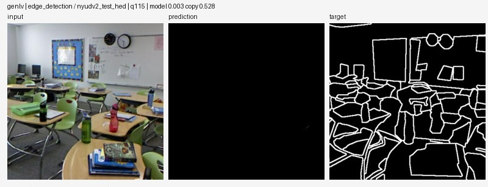
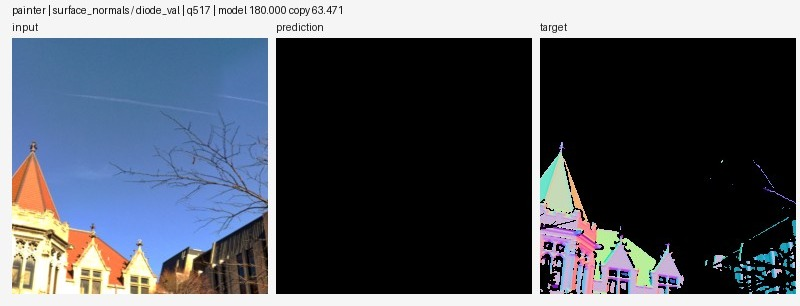
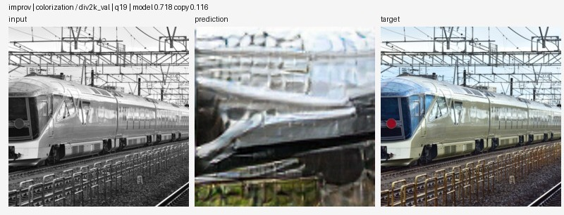
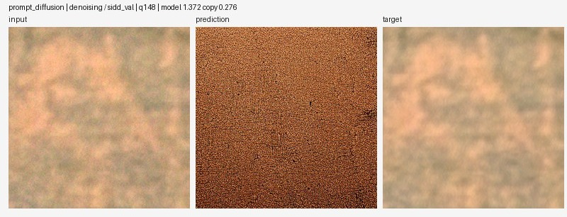
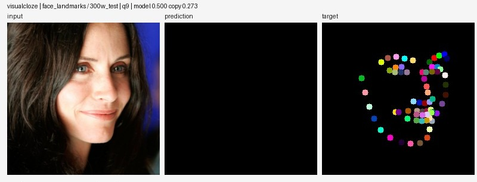
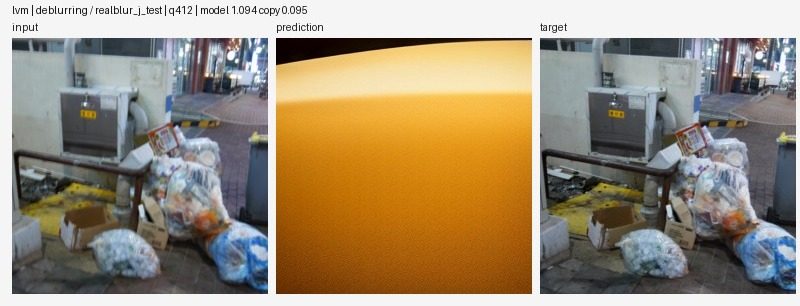

BENCH V2 · AUDIT · 15 NOVEMBER 2026
What do these scores
actually measure?
All 105,066 saved predictions inspected. Metric arithmetic largely reproduces, but protocol choices, split overlap, and dataset-specific failures materially change the interpretation.
Keep the original scores; qualify the claims. This audit adds diagnostics and alternative readouts. It does not replace the frozen benchmark or claim matched reproduction of the papers. The main site’s supervision-v6 identity and model-specific numerical qualifications still apply.
The main findings
- No primary-score mismatch in the completed replay scope. All 8,550 depth predictions and their copy controls replayed; 10,248 edge readouts matched their saved counts; 264 sampled non-depth/non-edge model/copy primary scores matched exactly. This is not a full rerun of every metric on every image.
- Test and validation are not fully disjoint. Nine datasets reuse all 17 validation task-query images each. The exclusion view below removes these 153 records per model. It does not certify absence of training-data overlap.
- Blank outputs are not the only failure. PromptDiffusion has zero near-black outputs but loses to copy on 48.6% of queries. IMProv loses on all colorization, deblurring and super-resolution queries. Distortion, noise and missing geometry dominate many failures.
- Depth already uses target-derived calibration. A negative fitted scale can flip the depth convention. Robust inverse-depth fitting raises δ1 by 0.17–3.26 percentage points, but constant GT-median depth beats the mean DIODE score of Painter, GenLV and IMProv.
- Paper metrics often answer different questions. Region matching is not labeled semantic segmentation; identity-free point matching is not labeled landmark evaluation; mean image F is not pooled OIS. Native absolute-depth paper numbers are not comparable to target-aligned δ1.
Black outputs and copy-input failures
Each row covers 17,511 queries. Exactly black means every pixel/channel is zero. Near-black means at least 99% of pixels have every channel ≤5/255. “Near-black, target isn’t” excludes similarly sparse/dark targets, but remains a screening heuristic—not proof of failure. Exact black is a subset of near-black.
| Model | Outputs | Exactly black | Near-black | Near-black, target isn’t | Worse than copy |
|---|---|---|---|---|---|
| VisualCloze | 17,511 | 0 (0.0%) | 216 (1.2%) | 214 (1.2%) | 4,233 (24.2%) |
| Painter | 17,511 | 270 (1.5%) | 540 (3.1%) | 524 (3.0%) | 8,939 (51.0%) |
| GenLV-101 Huge | 17,511 | 758 (4.3%) | 1,282 (7.3%) | 1,053 (6.0%) | 6,278 (35.9%) |
| PromptDiffusion | 17,511 | 0 (0.0%) | 0 (0.0%) | 0 (0.0%) | 8,514 (48.6%) |
| IMProv | 17,511 | 0 (0.0%) | 759 (4.3%) | 611 (3.5%) | 10,462 (59.7%) |
| LVM | 17,511 | 1 (0.0%) | 472 (2.7%) | 464 (2.6%) | 6,903 (39.4%) |
Worse-than-copy uses each task’s primary score and direction, with tolerance 1e−12. The overall rate weights tasks by their query counts; it is not an overall model ranking. Copy can receive accidental region/point credit, so it is a diagnostic control rather than a competent task model.
Filters apply to diagnostic tables and examples below.
All 156 model / dataset failure summaries
| Model | Task / dataset | N | Primary score | Copy score | Worse than copy | Black / near-black | Near-black, target isn’t |
|---|---|---|---|---|---|---|---|
| GenLV-101 Huge | Colorizationade20k_val | 2000 | 0.1696 | 0.2122 | 8.0% | 0 / 0 | 0 (0.0%) |
| GenLV-101 Huge | Colorizationdiv2k_val | 100 | 0.1869 | 0.2423 | 10.0% | 0 / 0 | 0 (0.0%) |
| GenLV-101 Huge | Deblurringgopro_test | 1111 | 0.1504 | 0.1894 | 34.3% | 0 / 0 | 0 (0.0%) |
| GenLV-101 Huge | Deblurringrealblur_j_test | 980 | 0.1135 | 0.1239 | 39.5% | 0 / 0 | 0 (0.0%) |
| GenLV-101 Huge | Denoisingcbsd68 | 68 | 0.1660 | 0.6881 | 0.0% | 0 / 0 | 0 (0.0%) |
| GenLV-101 Huge | Denoisingsidd_val | 1280 | 0.5264 | 0.7918 | 14.3% | 0 / 1 | 1 (0.1%) |
| GenLV-101 Huge | Edge Detectionbsds500_test | 200 | 0.6873 | 0.3448 | 2.0% | 0 / 1 | 1 (0.5%) |
| GenLV-101 Huge | Edge Detectionnyudv2_test_hed | 654 | 0.0484 | 0.3378 | 100.0% | 135 / 222 | 222 (33.9%) |
| GenLV-101 Huge | Face Landmarks300w_test | 600 | 0.4025 | 0.3326 | 80.2% | 54 / 87 | 87 (14.5%) |
| GenLV-101 Huge | Face Landmarkscofw68_test | 507 | 0.4116 | 0.3470 | 84.4% | 20 / 31 | 31 (6.1%) |
| GenLV-101 Huge | Human Pose 2Dflic_test | 926 | 0.2487 | 0.1977 | 31.2% | 186 / 215 | 2 (0.2%) |
| GenLV-101 Huge | Human Pose 2Dlsp_test | 1000 | 0.1458 | 0.2074 | 55.6% | 209 / 351 | 350 (35.0%) |
| GenLV-101 Huge | Inpaintingdiv2k_val | 100 | 0.0651 | 0.1848 | 0.0% | 0 / 0 | 0 (0.0%) |
| GenLV-101 Huge | Inpaintingurban100 | 100 | 0.0706 | 0.1807 | 0.0% | 0 / 0 | 0 (0.0%) |
| GenLV-101 Huge | Instance Segmentationnyuv2_test | 654 | 0.0144 | 0.0399 | 57.5% | 6 / 55 | 55 (8.4%) |
| GenLV-101 Huge | Instance Segmentationvoc2012_val | 1449 | 0.1488 | 0.0152 | 12.1% | 85 / 192 | 180 (12.4%) |
| GenLV-101 Huge | Relative Depthdiode_val | 771 | 0.5458 | 0.5618 | 51.6% | 4 / 6 | 6 (0.8%) |
| GenLV-101 Huge | Relative Depthnyuv2_test | 654 | 0.6934 | 0.5410 | 17.7% | 0 / 0 | 0 (0.0%) |
| GenLV-101 Huge | Saliency Detectionecssd | 1000 | 0.8514 | 0.4793 | 9.2% | 16 / 28 | 28 (2.8%) |
| GenLV-101 Huge | Saliency Detectionpascal_s | 845 | 0.7453 | 0.4484 | 18.9% | 30 / 64 | 61 (7.2%) |
| GenLV-101 Huge | Semantic Segmentationcamvid_test | 233 | 0.1411 | 0.1970 | 80.7% | 0 / 0 | 0 (0.0%) |
| GenLV-101 Huge | Semantic Segmentationnyuv2_test_40 | 654 | 0.1856 | 0.2478 | 78.3% | 1 / 5 | 5 (0.8%) |
| GenLV-101 Huge | Super Resolutiondiv2k_val | 100 | 0.3418 | 0.4551 | 6.0% | 0 / 0 | 0 (0.0%) |
| GenLV-101 Huge | Super Resolutionurban100 | 100 | 0.3608 | 0.4736 | 9.0% | 0 / 0 | 0 (0.0%) |
| GenLV-101 Huge | Surface Normalsdiode_val | 771 | 118.4041 | 118.6072 | 44.7% | 12 / 22 | 22 (2.9%) |
| GenLV-101 Huge | Surface Normalsnyuv2_test_geonet | 654 | 108.1219 | 106.0251 | 56.1% | 0 / 2 | 2 (0.3%) |
| IMProv | Colorizationade20k_val | 2000 | 0.6270 | 0.2122 | 100.0% | 0 / 0 | 0 (0.0%) |
| IMProv | Colorizationdiv2k_val | 100 | 0.6238 | 0.2423 | 100.0% | 0 / 0 | 0 (0.0%) |
| IMProv | Deblurringgopro_test | 1111 | 0.6113 | 0.1894 | 100.0% | 0 / 0 | 0 (0.0%) |
| IMProv | Deblurringrealblur_j_test | 980 | 0.5458 | 0.1239 | 100.0% | 0 / 0 | 0 (0.0%) |
| IMProv | Denoisingcbsd68 | 68 | 0.5798 | 0.6881 | 44.1% | 0 / 0 | 0 (0.0%) |
| IMProv | Denoisingsidd_val | 1280 | 0.4764 | 0.7918 | 5.4% | 0 / 0 | 0 (0.0%) |
| IMProv | Edge Detectionbsds500_test | 200 | 0.3276 | 0.3448 | 61.0% | 0 / 1 | 1 (0.5%) |
| IMProv | Edge Detectionnyudv2_test_hed | 654 | 0.3264 | 0.3378 | 57.5% | 0 / 1 | 1 (0.2%) |
| IMProv | Face Landmarks300w_test | 600 | 0.4694 | 0.3326 | 95.0% | 0 / 180 | 180 (30.0%) |
| IMProv | Face Landmarkscofw68_test | 507 | 0.4668 | 0.3470 | 93.7% | 0 / 132 | 132 (26.0%) |
| IMProv | Human Pose 2Dflic_test | 926 | 0.0317 | 0.1977 | 74.1% | 0 / 145 | 0 (0.0%) |
| IMProv | Human Pose 2Dlsp_test | 1000 | 0.0701 | 0.2074 | 72.8% | 0 / 128 | 128 (12.8%) |
| IMProv | Inpaintingdiv2k_val | 100 | 0.1158 | 0.1848 | 1.0% | 0 / 0 | 0 (0.0%) |
| IMProv | Inpaintingurban100 | 100 | 0.1214 | 0.1807 | 2.0% | 0 / 0 | 0 (0.0%) |
| IMProv | Instance Segmentationnyuv2_test | 654 | 0.0044 | 0.0399 | 61.8% | 0 / 0 | 0 (0.0%) |
| IMProv | Instance Segmentationvoc2012_val | 1449 | 0.0120 | 0.0152 | 14.6% | 0 / 67 | 64 (4.4%) |
| IMProv | Relative Depthdiode_val | 771 | 0.5228 | 0.5618 | 66.7% | 0 / 8 | 8 (1.0%) |
| IMProv | Relative Depthnyuv2_test | 654 | 0.4865 | 0.5410 | 68.5% | 0 / 0 | 0 (0.0%) |
| IMProv | Saliency Detectionecssd | 1000 | 0.7083 | 0.4793 | 15.9% | 0 / 40 | 40 (4.0%) |
| IMProv | Saliency Detectionpascal_s | 845 | 0.6182 | 0.4484 | 24.1% | 0 / 46 | 46 (5.4%) |
| IMProv | Semantic Segmentationcamvid_test | 233 | 0.1792 | 0.1970 | 67.0% | 0 / 0 | 0 (0.0%) |
| IMProv | Semantic Segmentationnyuv2_test_40 | 654 | 0.1662 | 0.2478 | 86.4% | 0 / 0 | 0 (0.0%) |
| IMProv | Super Resolutiondiv2k_val | 100 | 0.6132 | 0.4551 | 100.0% | 0 / 0 | 0 (0.0%) |
| IMProv | Super Resolutionurban100 | 100 | 0.6174 | 0.4736 | 100.0% | 0 / 0 | 0 (0.0%) |
| IMProv | Surface Normalsdiode_val | 771 | 96.0995 | 118.6072 | 32.6% | 0 / 11 | 11 (1.4%) |
| IMProv | Surface Normalsnyuv2_test_geonet | 654 | 75.2526 | 106.0251 | 15.3% | 0 / 0 | 0 (0.0%) |
| LVM | Colorizationade20k_val | 2000 | 0.2784 | 0.2122 | 82.8% | 0 / 0 | 0 (0.0%) |
| LVM | Colorizationdiv2k_val | 100 | 0.3208 | 0.2423 | 82.0% | 0 / 0 | 0 (0.0%) |
| LVM | Deblurringgopro_test | 1111 | 0.3524 | 0.1894 | 99.4% | 0 / 0 | 0 (0.0%) |
| LVM | Deblurringrealblur_j_test | 980 | 0.2612 | 0.1239 | 99.8% | 0 / 0 | 0 (0.0%) |
| LVM | Denoisingcbsd68 | 68 | 0.4445 | 0.6881 | 19.1% | 0 / 0 | 0 (0.0%) |
| LVM | Denoisingsidd_val | 1280 | 0.1744 | 0.7918 | 0.0% | 0 / 0 | 0 (0.0%) |
| LVM | Edge Detectionbsds500_test | 200 | 0.2596 | 0.3448 | 85.0% | 0 / 3 | 3 (1.5%) |
| LVM | Edge Detectionnyudv2_test_hed | 654 | 0.2711 | 0.3378 | 80.0% | 0 / 35 | 35 (5.4%) |
| LVM | Face Landmarks300w_test | 600 | 0.3621 | 0.3326 | 57.2% | 0 / 85 | 85 (14.2%) |
| LVM | Face Landmarkscofw68_test | 507 | 0.3899 | 0.3470 | 65.5% | 0 / 80 | 80 (15.8%) |
| LVM | Human Pose 2Dflic_test | 926 | 0.3275 | 0.1977 | 15.2% | 0 / 0 | 0 (0.0%) |
| LVM | Human Pose 2Dlsp_test | 1000 | 0.4169 | 0.2074 | 7.9% | 0 / 15 | 15 (1.5%) |
| LVM | Inpaintingdiv2k_val | 100 | 0.1737 | 0.1848 | 0.0% | 0 / 0 | 0 (0.0%) |
| LVM | Inpaintingurban100 | 100 | 0.1674 | 0.1807 | 0.0% | 0 / 0 | 0 (0.0%) |
| LVM | Instance Segmentationnyuv2_test | 654 | 0.1285 | 0.0399 | 14.7% | 0 / 11 | 11 (1.7%) |
| LVM | Instance Segmentationvoc2012_val | 1449 | 0.1870 | 0.0152 | 6.1% | 0 / 193 | 185 (12.8%) |
| LVM | Relative Depthdiode_val | 771 | 0.6436 | 0.5618 | 33.3% | 0 / 5 | 5 (0.6%) |
| LVM | Relative Depthnyuv2_test | 654 | 0.8649 | 0.5410 | 3.7% | 0 / 0 | 0 (0.0%) |
| LVM | Saliency Detectionecssd | 1000 | 0.7300 | 0.4793 | 14.7% | 0 / 12 | 12 (1.2%) |
| LVM | Saliency Detectionpascal_s | 845 | 0.6938 | 0.4484 | 14.7% | 0 / 3 | 3 (0.4%) |
| LVM | Semantic Segmentationcamvid_test | 233 | 0.3425 | 0.1970 | 4.3% | 0 / 1 | 1 (0.4%) |
| LVM | Semantic Segmentationnyuv2_test_40 | 654 | 0.3358 | 0.2478 | 24.6% | 0 / 0 | 0 (0.0%) |
| LVM | Super Resolutiondiv2k_val | 100 | 0.5355 | 0.4551 | 86.0% | 0 / 0 | 0 (0.0%) |
| LVM | Super Resolutionurban100 | 100 | 0.5285 | 0.4736 | 70.0% | 0 / 0 | 0 (0.0%) |
| LVM | Surface Normalsdiode_val | 771 | 106.6871 | 118.6072 | 32.3% | 1 / 29 | 29 (3.8%) |
| LVM | Surface Normalsnyuv2_test_geonet | 654 | 87.9510 | 106.0251 | 25.7% | 0 / 0 | 0 (0.0%) |
| Painter | Colorizationade20k_val | 2000 | 0.3317 | 0.2122 | 99.9% | 0 / 0 | 0 (0.0%) |
| Painter | Colorizationdiv2k_val | 100 | 0.3174 | 0.2423 | 100.0% | 0 / 0 | 0 (0.0%) |
| Painter | Deblurringgopro_test | 1111 | 0.2162 | 0.1894 | 78.2% | 0 / 0 | 0 (0.0%) |
| Painter | Deblurringrealblur_j_test | 980 | 0.3046 | 0.1239 | 99.1% | 0 / 1 | 1 (0.1%) |
| Painter | Denoisingcbsd68 | 68 | 0.1973 | 0.6881 | 1.5% | 0 / 0 | 0 (0.0%) |
| Painter | Denoisingsidd_val | 1280 | 0.2229 | 0.7918 | 0.3% | 0 / 0 | 0 (0.0%) |
| Painter | Edge Detectionbsds500_test | 200 | 0.1974 | 0.3448 | 91.5% | 0 / 4 | 4 (2.0%) |
| Painter | Edge Detectionnyudv2_test_hed | 654 | 0.2597 | 0.3378 | 85.6% | 0 / 0 | 0 (0.0%) |
| Painter | Face Landmarks300w_test | 600 | 0.4342 | 0.3326 | 92.3% | 0 / 0 | 0 (0.0%) |
| Painter | Face Landmarkscofw68_test | 507 | 0.4469 | 0.3470 | 95.3% | 0 / 0 | 0 (0.0%) |
| Painter | Human Pose 2Dflic_test | 926 | 0.1629 | 0.1977 | 46.7% | 0 / 0 | 0 (0.0%) |
| Painter | Human Pose 2Dlsp_test | 1000 | 0.1970 | 0.2074 | 44.1% | 0 / 0 | 0 (0.0%) |
| Painter | Inpaintingdiv2k_val | 100 | 0.1762 | 0.1848 | 17.0% | 0 / 0 | 0 (0.0%) |
| Painter | Inpaintingurban100 | 100 | 0.1718 | 0.1807 | 15.0% | 0 / 0 | 0 (0.0%) |
| Painter | Instance Segmentationnyuv2_test | 654 | 0.0876 | 0.0399 | 25.8% | 0 / 1 | 1 (0.2%) |
| Painter | Instance Segmentationvoc2012_val | 1449 | 0.6792 | 0.0152 | 0.3% | 1 / 14 | 0 (0.0%) |
| Painter | Relative Depthdiode_val | 771 | 0.5679 | 0.5618 | 46.2% | 1 / 36 | 36 (4.7%) |
| Painter | Relative Depthnyuv2_test | 654 | 0.9664 | 0.5410 | 0.3% | 0 / 0 | 0 (0.0%) |
| Painter | Saliency Detectionecssd | 1000 | 0.7900 | 0.4793 | 20.4% | 96 / 183 | 183 (18.3%) |
| Painter | Saliency Detectionpascal_s | 845 | 0.8522 | 0.4484 | 6.4% | 1 / 3 | 1 (0.1%) |
| Painter | Semantic Segmentationcamvid_test | 233 | 0.3488 | 0.1970 | 26.6% | 0 / 10 | 10 (4.3%) |
| Painter | Semantic Segmentationnyuv2_test_40 | 654 | 0.2869 | 0.2478 | 47.7% | 0 / 0 | 0 (0.0%) |
| Painter | Super Resolutiondiv2k_val | 100 | 0.4854 | 0.4551 | 52.0% | 0 / 0 | 0 (0.0%) |
| Painter | Super Resolutionurban100 | 100 | 0.5198 | 0.4736 | 59.0% | 0 / 0 | 0 (0.0%) |
| Painter | Surface Normalsdiode_val | 771 | 147.0261 | 118.6072 | 75.7% | 171 / 286 | 286 (37.1%) |
| Painter | Surface Normalsnyuv2_test_geonet | 654 | 116.0493 | 106.0251 | 69.3% | 0 / 2 | 2 (0.3%) |
| PromptDiffusion | Colorizationade20k_val | 2000 | 0.6186 | 0.2122 | 100.0% | 0 / 0 | 0 (0.0%) |
| PromptDiffusion | Colorizationdiv2k_val | 100 | 0.6113 | 0.2423 | 100.0% | 0 / 0 | 0 (0.0%) |
| PromptDiffusion | Deblurringgopro_test | 1111 | 0.6613 | 0.1894 | 100.0% | 0 / 0 | 0 (0.0%) |
| PromptDiffusion | Deblurringrealblur_j_test | 980 | 0.6420 | 0.1239 | 100.0% | 0 / 0 | 0 (0.0%) |
| PromptDiffusion | Denoisingcbsd68 | 68 | 0.8682 | 0.6881 | 64.7% | 0 / 0 | 0 (0.0%) |
| PromptDiffusion | Denoisingsidd_val | 1280 | 1.1064 | 0.7918 | 89.5% | 0 / 0 | 0 (0.0%) |
| PromptDiffusion | Edge Detectionbsds500_test | 200 | 0.6930 | 0.3448 | 0.0% | 0 / 0 | 0 (0.0%) |
| PromptDiffusion | Edge Detectionnyudv2_test_hed | 654 | 0.6187 | 0.3378 | 0.0% | 0 / 0 | 0 (0.0%) |
| PromptDiffusion | Face Landmarks300w_test | 600 | 0.3403 | 0.3326 | 58.5% | 0 / 0 | 0 (0.0%) |
| PromptDiffusion | Face Landmarkscofw68_test | 507 | 0.3578 | 0.3470 | 61.9% | 0 / 0 | 0 (0.0%) |
| PromptDiffusion | Human Pose 2Dflic_test | 926 | 0.1538 | 0.1977 | 45.9% | 0 / 0 | 0 (0.0%) |
| PromptDiffusion | Human Pose 2Dlsp_test | 1000 | 0.1675 | 0.2074 | 50.8% | 0 / 0 | 0 (0.0%) |
| PromptDiffusion | Inpaintingdiv2k_val | 100 | 0.1921 | 0.1848 | 51.0% | 0 / 0 | 0 (0.0%) |
| PromptDiffusion | Inpaintingurban100 | 100 | 0.1770 | 0.1807 | 38.0% | 0 / 0 | 0 (0.0%) |
| PromptDiffusion | Instance Segmentationnyuv2_test | 654 | 0.1329 | 0.0399 | 11.0% | 0 / 0 | 0 (0.0%) |
| PromptDiffusion | Instance Segmentationvoc2012_val | 1449 | 0.0771 | 0.0152 | 7.6% | 0 / 0 | 0 (0.0%) |
| PromptDiffusion | Relative Depthdiode_val | 771 | 0.7222 | 0.5618 | 16.6% | 0 / 0 | 0 (0.0%) |
| PromptDiffusion | Relative Depthnyuv2_test | 654 | 0.7973 | 0.5410 | 6.6% | 0 / 0 | 0 (0.0%) |
| PromptDiffusion | Saliency Detectionecssd | 1000 | 0.6012 | 0.4793 | 27.3% | 0 / 0 | 0 (0.0%) |
| PromptDiffusion | Saliency Detectionpascal_s | 845 | 0.5236 | 0.4484 | 30.1% | 0 / 0 | 0 (0.0%) |
| PromptDiffusion | Semantic Segmentationcamvid_test | 233 | 0.3948 | 0.1970 | 0.0% | 0 / 0 | 0 (0.0%) |
| PromptDiffusion | Semantic Segmentationnyuv2_test_40 | 654 | 0.3670 | 0.2478 | 14.1% | 0 / 0 | 0 (0.0%) |
| PromptDiffusion | Super Resolutiondiv2k_val | 100 | 0.8448 | 0.4551 | 99.0% | 0 / 0 | 0 (0.0%) |
| PromptDiffusion | Super Resolutionurban100 | 100 | 0.7162 | 0.4736 | 91.0% | 0 / 0 | 0 (0.0%) |
| PromptDiffusion | Surface Normalsdiode_val | 771 | 91.2675 | 118.6072 | 12.5% | 0 / 0 | 0 (0.0%) |
| PromptDiffusion | Surface Normalsnyuv2_test_geonet | 654 | 96.8608 | 106.0251 | 28.9% | 0 / 0 | 0 (0.0%) |
| VisualCloze | Colorizationade20k_val | 2000 | 0.3394 | 0.2122 | 67.8% | 0 / 0 | 0 (0.0%) |
| VisualCloze | Colorizationdiv2k_val | 100 | 0.3260 | 0.2423 | 51.0% | 0 / 0 | 0 (0.0%) |
| VisualCloze | Deblurringgopro_test | 1111 | 0.1710 | 0.1894 | 42.3% | 0 / 0 | 0 (0.0%) |
| VisualCloze | Deblurringrealblur_j_test | 980 | 0.1126 | 0.1239 | 36.4% | 0 / 0 | 0 (0.0%) |
| VisualCloze | Denoisingcbsd68 | 68 | 0.1909 | 0.6881 | 1.5% | 0 / 0 | 0 (0.0%) |
| VisualCloze | Denoisingsidd_val | 1280 | 0.3254 | 0.7918 | 2.2% | 0 / 18 | 18 (1.4%) |
| VisualCloze | Edge Detectionbsds500_test | 200 | 0.7342 | 0.3448 | 0.0% | 0 / 0 | 0 (0.0%) |
| VisualCloze | Edge Detectionnyudv2_test_hed | 654 | 0.5904 | 0.3378 | 2.3% | 0 / 0 | 0 (0.0%) |
| VisualCloze | Face Landmarks300w_test | 600 | 0.3053 | 0.3325 | 31.7% | 0 / 72 | 72 (12.0%) |
| VisualCloze | Face Landmarkscofw68_test | 507 | 0.3383 | 0.3467 | 43.4% | 0 / 101 | 101 (19.9%) |
| VisualCloze | Human Pose 2Dflic_test | 926 | 0.2656 | 0.1977 | 25.7% | 0 / 0 | 0 (0.0%) |
| VisualCloze | Human Pose 2Dlsp_test | 1000 | 0.3346 | 0.2074 | 17.8% | 0 / 0 | 0 (0.0%) |
| VisualCloze | Inpaintingdiv2k_val | 100 | 0.0804 | 0.1848 | 5.0% | 0 / 0 | 0 (0.0%) |
| VisualCloze | Inpaintingurban100 | 100 | 0.0805 | 0.1807 | 2.0% | 0 / 0 | 0 (0.0%) |
| VisualCloze | Instance Segmentationnyuv2_test | 654 | 0.0606 | 0.0399 | 35.2% | 0 / 0 | 0 (0.0%) |
| VisualCloze | Instance Segmentationvoc2012_val | 1449 | 0.0849 | 0.0152 | 10.0% | 0 / 9 | 8 (0.6%) |
| VisualCloze | Relative Depthdiode_val | 771 | 0.7232 | 0.5618 | 18.0% | 0 / 0 | 0 (0.0%) |
| VisualCloze | Relative Depthnyuv2_test | 654 | 0.9217 | 0.5410 | 1.2% | 0 / 0 | 0 (0.0%) |
| VisualCloze | Saliency Detectionecssd | 1000 | 0.7841 | 0.4793 | 16.4% | 0 / 6 | 6 (0.6%) |
| VisualCloze | Saliency Detectionpascal_s | 845 | 0.7004 | 0.4484 | 17.9% | 0 / 10 | 9 (1.1%) |
| VisualCloze | Semantic Segmentationcamvid_test | 233 | 0.2582 | 0.1970 | 22.7% | 0 / 0 | 0 (0.0%) |
| VisualCloze | Semantic Segmentationnyuv2_test_40 | 654 | 0.2926 | 0.2478 | 32.4% | 0 / 0 | 0 (0.0%) |
| VisualCloze | Super Resolutiondiv2k_val | 100 | 0.1947 | 0.4551 | 1.0% | 0 / 0 | 0 (0.0%) |
| VisualCloze | Super Resolutionurban100 | 100 | 0.1783 | 0.4736 | 0.0% | 0 / 0 | 0 (0.0%) |
| VisualCloze | Surface Normalsdiode_val | 771 | 55.5648 | 118.6072 | 1.4% | 0 / 0 | 0 (0.0%) |
| VisualCloze | Surface Normalsnyuv2_test_geonet | 654 | 61.5658 | 106.0251 | 1.1% | 0 / 0 | 0 (0.0%) |
Observed failure modes
The examples below are deliberately adverse, selected as the worst copy-relative case among retained samples (q0, middle, last and the dataset’s worst case). They illustrate mechanisms; the full-scan counts above estimate prevalence. Images show input, prediction, then target without contrast enhancement.












From saved PNGs alone, a blank output cannot distinguish task misunderstanding, numerical failure before image conversion, or output-decoder collapse. That requires inference traces. In particular, the archived VisualCloze numerical warning remains a qualification; this scan does not establish its cause or cross-hardware parity.
Metric-by-metric assessment
The primary calculations follow the frozen benchmark contracts in the checked scope. The following distinctions matter before interpreting them as conventional task scores. Secondary formulas were also replayed on the same dataset samples: 2,636 scalar checks across 132 dataset samples; 24 exceed 1e−7 tolerance. All are RealBlur ECC secondaries: maximum PSNR difference 0.000108 dB, maximum SSIM difference 0.00000718. See the exact differences in the downloadable replay report.
Semantic segmentation
Hungarian-matched, class-agnostic per-image mIoU ↑
PP2 decodes colors into regions; GT void is excluded. Mean matched IoU is over GT regions, not a dataset class confusion matrix. Extra predicted regions are not independently counted in the mIoU denominator.
Interpretation: Useful for region correspondence; not standard semantic class mIoU. A model can get credit with the wrong semantic color identity. Report pooled class-aware mIoU separately if semantic recognition is the claim.
Instance segmentation
Class-agnostic per-image PQ ↑
Matches segments at IoU >0.5; uses TP/FP/FN and source-specific void masks. Background remains a scored region. Dataset PQ pools counts; the main site averages image PQ.
Interpretation: Show both forms. Under/over-segmentation and omitted instances are real failures; do not call this category-aware COCO PQ.
Saliency detection
Mean of each image’s max Fβ ↑; β²=0.3
Per-image min–max normalization, 256 thresholds, target >128. A tiny nonzero intensity range can be stretched to full contrast. Mean(image maximum) differs from max(mean curve), the common dataset report.
Interpretation: Thresholds use the target to choose an optimum. Add curve-first max-Fβ and MAE; darkness alone does not establish saliency failure.
Edge detection
Mean image best-threshold F ↑
All 10,248 model/copy image readouts reproduce exactly from saved matching counts. BSDS uses its native multi-annotator path; NYU uses the frozen raster/Hopcroft–Karp path. IMProv retains its validation-selected square-root transform.
Interpretation: Mean image F is not pooled OIS or ODS. Native pixel matching was not rerun: host binary fingerprint drift blocked scorer admission. Count arithmetic is checked, native matching remains an explicit audit limit.
Relative depth
δ1 ↑ after signed affine inverse-depth alignment
Replayed all 8,550 predictions and copy controls independently. Reconstructs GT from quantized inverse-depth endpoints, excludes endpoint codes, applies crop/range, and fits each query to its own target. Painter uses reciprocal gray decoding first.
Interpretation: The fit may flip depth direction, and the minimum inverse depth includes a GT-derived per-image far cap. This is relative shape evaluation with oracle calibration, not absolute metric depth. See the alternatives below.
Surface normals
Mean angular error in degrees ↓
RGB → signed unit vectors. Scores valid GT pixels; invalid predicted normals receive 180°, rather than disappearing. Main score averages per-image means; pooled score weights every valid pixel equally.
Interpretation: Sparse DIODE ground truth and black predictions materially affect the result. Verify coordinate conventions before comparing another paper. A black background can be legitimate; errors must be measured on valid GT.
Human pose 2D
Identity-free torso-normalized PCK@0.2 ↑
Colored blobs become points, prediction count is capped using the GT point count, and Hungarian matching ignores joint labels. Additional normalizers and FLIC elbow/wrist subsets are secondary.
Interpretation: This can reward the right spatial point set with the wrong joint identities and hide excess detections after capping. Not standard labeled-joint PCK. Report uncapped false positives and label-aware PCK for that claim.
Face landmarks
Identity-free normalized mean error ↓
Same blob extraction and GT-count cap. Missing/unmatched points incur 0.5 normalized error; matching uses a 0.5-normalizer gate. Mean error includes missing-point penalties.
Interpretation: Not conventional 68-label NME. Blank outputs saturate near 0.5; copy images can generate spurious colored blobs and nonzero baseline credit. Track coverage alongside NME.
Colorization
LPIPS AlexNet v0.1 ↓
Frozen CPU LPIPS on RGB tiles; secondary RGB/chroma/Lab PSNR, CIEDE2000 and colorfulness. Chroma PSNR replaces luma with GT luma; it is a different, target-assisted diagnostic.
Interpretation: Grayscale copy preserves structure and can beat a colored but distorted prediction on LPIPS. Use chromatic errors as well as LPIPS before calling colorization successful.
Denoising
LPIPS AlexNet v0.1 ↓
Scores the whole 256×256 RGB prediction. PSNR uses peak 255; SSIM uses an 11×11 Gaussian window, σ=1.5, valid region, averaged across RGB channels.
Interpretation: Paper PSNR/SSIM can use different patch sampling, resolution and checkpoint fine-tuning. Compare secondary PSNR/SSIM with those settings stated, not LPIPS against a paper PSNR.
Deblurring
LPIPS AlexNet v0.1 ↓
Primary LPIPS is unaligned. RealBlur also records ECC-aligned PSNR/SSIM. Those secondaries optimize geometric/photometric correspondence; they are a distinct measurement.
Interpretation: Copy is a strong baseline on mildly blurred inputs. Small ECC replay differences occur in the current host; do not present those aligned values as bitwise reproduced.
Inpainting
LPIPS of composited image ↓
Inserts prediction only inside the supplied hole and restores the original input outside. Full-image LPIPS therefore hides changes the raw model made outside the hole. Hole MAE/PSNR, outside leakage and uncomposited LPIPS are secondary.
Interpretation: A valid composited-image protocol, but not preservation by the raw model. Report hole quality and outside leakage separately; scores depend on mask area.
Super resolution
LPIPS AlexNet v0.1 ↓
Primary uses whole RGB tiles. Secondary Y-channel PSNR/SSIM crop 4 pixels; DIV2K NTIRE RGB PSNR crops 10. These are distinct from primary LPIPS.
Interpretation: Do not compare to a paper’s Y-channel PSNR as if the same metric. Blur, hallucinated structure and altered colors can lose to the provided low-resolution/upscaled input.
Edge mean-image versus pooled readouts
These are alternative reductions of the same stored counts, not newly matched boundaries.
| Model | Dataset | Mean image best F (site) | Pooled OIS | Pooled ODS |
|---|---|---|---|---|
| GenLV-101 Huge | bsds500_test | 0.6873 | 0.6969 | 0.6581 |
| GenLV-101 Huge | nyudv2_test_hed | 0.0484 | 0.0515 | 0.0413 |
| IMProv | bsds500_test | 0.3276 | 0.3383 | 0.3274 |
| IMProv | nyudv2_test_hed | 0.3264 | 0.3386 | 0.3264 |
| LVM | bsds500_test | 0.2596 | 0.2768 | 0.1697 |
| LVM | nyudv2_test_hed | 0.2711 | 0.2928 | 0.2246 |
| Painter | bsds500_test | 0.1974 | 0.2092 | 0.1082 |
| Painter | nyudv2_test_hed | 0.2597 | 0.2644 | 0.1594 |
| PromptDiffusion | bsds500_test | 0.6930 | 0.7009 | 0.6872 |
| PromptDiffusion | nyudv2_test_hed | 0.6187 | 0.6246 | 0.6031 |
| VisualCloze | bsds500_test | 0.7342 | 0.7469 | 0.7235 |
| VisualCloze | nyudv2_test_hed | 0.5904 | 0.5969 | 0.5857 |
Saliency, normals and PQ: image means versus pooled reductions
Saliency pools curves before maximizing; normals pool valid-pixel sums; PQ pools matching counts. Semantic rows show secondary PQ, not primary mIoU.
| Model | Task / dataset | Metric | Mean per-image | Pooled / curve-first |
|---|---|---|---|---|
| GenLV-101 Huge | Instance Segmentationnyuv2_test | pq | 0.0144 | 0.0120 |
| GenLV-101 Huge | Instance Segmentationvoc2012_val | pq | 0.1488 | 0.0402 |
| GenLV-101 Huge | Saliency Detectionecssd | max_fbeta | 0.8514 | 0.8064 |
| GenLV-101 Huge | Saliency Detectionpascal_s | max_fbeta | 0.7453 | 0.6596 |
| GenLV-101 Huge | Semantic Segmentationcamvid_test | pq | 0.0097 | 0.0088 |
| GenLV-101 Huge | Semantic Segmentationnyuv2_test_40 | pq | 0.0276 | 0.0238 |
| GenLV-101 Huge | Surface Normalsdiode_val | mean_deg | 118.4041 | 116.9873 |
| GenLV-101 Huge | Surface Normalsnyuv2_test_geonet | mean_deg | 108.1219 | 108.0525 |
| IMProv | Instance Segmentationnyuv2_test | pq | 0.0044 | 0.0042 |
| IMProv | Instance Segmentationvoc2012_val | pq | 0.0120 | 0.0088 |
| IMProv | Saliency Detectionecssd | max_fbeta | 0.7083 | 0.6128 |
| IMProv | Saliency Detectionpascal_s | max_fbeta | 0.6182 | 0.4842 |
| IMProv | Semantic Segmentationcamvid_test | pq | 0.0174 | 0.0158 |
| IMProv | Semantic Segmentationnyuv2_test_40 | pq | 0.0059 | 0.0053 |
| IMProv | Surface Normalsdiode_val | mean_deg | 96.0995 | 95.3161 |
| IMProv | Surface Normalsnyuv2_test_geonet | mean_deg | 75.2526 | 75.1138 |
| LVM | Instance Segmentationnyuv2_test | pq | 0.1285 | 0.1197 |
| LVM | Instance Segmentationvoc2012_val | pq | 0.1870 | 0.1341 |
| LVM | Saliency Detectionecssd | max_fbeta | 0.7300 | 0.6437 |
| LVM | Saliency Detectionpascal_s | max_fbeta | 0.6938 | 0.6109 |
| LVM | Semantic Segmentationcamvid_test | pq | 0.2513 | 0.2414 |
| LVM | Semantic Segmentationnyuv2_test_40 | pq | 0.2375 | 0.2209 |
| LVM | Surface Normalsdiode_val | mean_deg | 106.6871 | 106.1280 |
| LVM | Surface Normalsnyuv2_test_geonet | mean_deg | 87.9510 | 87.9591 |
| Painter | Instance Segmentationnyuv2_test | pq | 0.0876 | 0.0894 |
| Painter | Instance Segmentationvoc2012_val | pq | 0.6792 | 0.5167 |
| Painter | Saliency Detectionecssd | max_fbeta | 0.7900 | 0.6982 |
| Painter | Saliency Detectionpascal_s | max_fbeta | 0.8522 | 0.8423 |
| Painter | Semantic Segmentationcamvid_test | pq | 0.2409 | 0.2382 |
| Painter | Semantic Segmentationnyuv2_test_40 | pq | 0.1632 | 0.1703 |
| Painter | Surface Normalsdiode_val | mean_deg | 147.0261 | 148.0541 |
| Painter | Surface Normalsnyuv2_test_geonet | mean_deg | 116.0493 | 116.2564 |
| PromptDiffusion | Instance Segmentationnyuv2_test | pq | 0.1329 | 0.1182 |
| PromptDiffusion | Instance Segmentationvoc2012_val | pq | 0.0771 | 0.0547 |
| PromptDiffusion | Saliency Detectionecssd | max_fbeta | 0.6012 | 0.4378 |
| PromptDiffusion | Saliency Detectionpascal_s | max_fbeta | 0.5236 | 0.3629 |
| PromptDiffusion | Semantic Segmentationcamvid_test | pq | 0.2747 | 0.2640 |
| PromptDiffusion | Semantic Segmentationnyuv2_test_40 | pq | 0.2062 | 0.1978 |
| PromptDiffusion | Surface Normalsdiode_val | mean_deg | 91.2675 | 90.7978 |
| PromptDiffusion | Surface Normalsnyuv2_test_geonet | mean_deg | 96.8608 | 96.9874 |
| VisualCloze | Instance Segmentationnyuv2_test | pq | 0.0606 | 0.0536 |
| VisualCloze | Instance Segmentationvoc2012_val | pq | 0.0849 | 0.0385 |
| VisualCloze | Saliency Detectionecssd | max_fbeta | 0.7841 | 0.6524 |
| VisualCloze | Saliency Detectionpascal_s | max_fbeta | 0.7004 | 0.5642 |
| VisualCloze | Semantic Segmentationcamvid_test | pq | 0.0774 | 0.0671 |
| VisualCloze | Semantic Segmentationnyuv2_test_40 | pq | 0.0633 | 0.0562 |
| VisualCloze | Surface Normalsdiode_val | mean_deg | 55.5648 | 54.9134 |
| VisualCloze | Surface Normalsnyuv2_test_geonet | mean_deg | 61.5658 | 61.6238 |
How well does test match validation?
The selected validation recipes use 17 queries per task. Test combines two datasets per task with query-count weighting. A shift in that mixture can look like model regression even when the original validation source is stable.
GenLV edges demonstrate the distinction. Validation: 0.6909. Test BSDS: 0.6873. Test NYU: 0.0484, with all 654 queries worse than copy and 222 near-black outputs. The combined 0.1980 score reflects a severe NYU-specific failure, not a collapse on BSDS.
Painter depth similarly moves from validation δ1 0.9845 to NYU 0.9664 and DIODE 0.5679. Most of the combined drop is the additional DIODE distribution. VisualCloze colorization moves from validation 0.2765 to test 0.3387; its test DIV2K value is 0.3260, so dataset mixture alone does not explain that change.
Overlap: 153 reused task-query records, 0.874% of the test suite, in face/300W, depth/NYU, edges/BSDS, instance/NYU, normals/DIODE, denoising/SIDD, and colorization/inpainting/super-resolution on DIV2K. The DIV2K subsets reuse 17% of each 100-image dataset. Both record IDs and raw-source hashes expose overlap. Excluding these leaves 17,358 queries per model. The largest exclusion shift among bounded-unit dataset scores is VisualCloze DIV2K colorization LPIPS, 0.3260 → 0.3366; normals shift by at most 0.185°.
“Same query IDs on test” is descriptive: demonstration pools and per-episode conventions can differ, so it is not a controlled paired model-change experiment. This exclusion addresses query overlap only; it does not audit all demonstration reuse or pretraining contamination.
| Model | Task / primary metric | Validation (17) | Test (both datasets) | Test excluding overlap | Excluded | Same query IDs on test |
|---|---|---|---|---|---|---|
| GenLV-101 Huge | Colorizationlpips ↓ | 0.2089 | 0.1705 | 0.1701 | 17 | 0.2092 |
| GenLV-101 Huge | Deblurringlpips ↓ | 0.1472 | 0.1331 | 0.1331 | 0 | — |
| GenLV-101 Huge | Denoisinglpips ↓ | 0.5460 | 0.5082 | 0.5076 | 17 | 0.5580 |
| GenLV-101 Huge | Edge Detectionois_f ↑ | 0.6909 | 0.1980 | 0.1879 | 17 | 0.6978 |
| GenLV-101 Huge | Face Landmarksnme ↓ | 0.3907 | 0.4067 | 0.4067 | 17 | 0.4058 |
| GenLV-101 Huge | Human Pose 2Dpck_torso_0.2 ↑ | 0.1843 | 0.1952 | 0.1952 | 0 | — |
| GenLV-101 Huge | Inpaintinglpips ↓ | 0.0565 | 0.0679 | 0.0689 | 17 | 0.0566 |
| GenLV-101 Huge | Instance Segmentationpq ↑ | 0.0119 | 0.1070 | 0.1077 | 17 | 0.0151 |
| GenLV-101 Huge | Relative Depthdelta1 ↑ | 0.6297 | 0.6136 | 0.6134 | 17 | 0.6222 |
| GenLV-101 Huge | Saliency Detectionmax_fbeta ↑ | 0.7418 | 0.8028 | 0.8028 | 0 | — |
| GenLV-101 Huge | Semantic Segmentationmiou ↑ | 0.1849 | 0.1739 | 0.1739 | 0 | — |
| GenLV-101 Huge | Super Resolutionlpips ↓ | 0.3226 | 0.3513 | 0.3520 | 17 | 0.3441 |
| GenLV-101 Huge | Surface Normalsmean_deg ↓ | 126.6305 | 113.6851 | 113.6224 | 17 | 118.8836 |
| IMProv | Colorizationlpips ↓ | 0.6236 | 0.6269 | 0.6268 | 17 | 0.6318 |
| IMProv | Deblurringlpips ↓ | 0.5816 | 0.5806 | 0.5806 | 0 | — |
| IMProv | Denoisinglpips ↓ | 0.4638 | 0.4816 | 0.4818 | 17 | 0.4703 |
| IMProv | Edge Detectionois_f ↑ | 0.3272 | 0.3267 | 0.3266 | 17 | 0.3309 |
| IMProv | Face Landmarksnme ↓ | 0.4924 | 0.4682 | 0.4684 | 17 | 0.4551 |
| IMProv | Human Pose 2Dpck_torso_0.2 ↑ | 0.0368 | 0.0517 | 0.0517 | 0 | — |
| IMProv | Inpaintinglpips ↓ | 0.1121 | 0.1186 | 0.1197 | 17 | 0.1065 |
| IMProv | Instance Segmentationpq ↑ | 0.0040 | 0.0097 | 0.0097 | 17 | 0.0087 |
| IMProv | Relative Depthdelta1 ↑ | 0.4423 | 0.5061 | 0.5067 | 17 | 0.4571 |
| IMProv | Saliency Detectionmax_fbeta ↑ | 0.4893 | 0.6671 | 0.6671 | 0 | — |
| IMProv | Semantic Segmentationmiou ↑ | 0.1717 | 0.1696 | 0.1696 | 0 | — |
| IMProv | Super Resolutionlpips ↓ | 0.6013 | 0.6153 | 0.6173 | 17 | 0.5940 |
| IMProv | Surface Normalsmean_deg ↓ | 86.8858 | 86.5318 | 86.3338 | 17 | 102.9310 |
| LVM | Colorizationlpips ↓ | 0.3251 | 0.2804 | 0.2800 | 17 | 0.3317 |
| LVM | Deblurringlpips ↓ | 0.3846 | 0.3096 | 0.3096 | 0 | — |
| LVM | Denoisinglpips ↓ | 0.1475 | 0.1881 | 0.1887 | 17 | 0.1392 |
| LVM | Edge Detectionois_f ↑ | 0.2733 | 0.2684 | 0.2684 | 17 | 0.2701 |
| LVM | Face Landmarksnme ↓ | 0.3678 | 0.3748 | 0.3752 | 17 | 0.3501 |
| LVM | Human Pose 2Dpck_torso_0.2 ↑ | 0.3157 | 0.3739 | 0.3739 | 0 | — |
| LVM | Inpaintinglpips ↓ | 0.1427 | 0.1706 | 0.1734 | 17 | 0.1404 |
| LVM | Instance Segmentationpq ↑ | 0.1005 | 0.1688 | 0.1692 | 17 | 0.1206 |
| LVM | Relative Depthdelta1 ↑ | 0.8984 | 0.7451 | 0.7433 | 17 | 0.8945 |
| LVM | Saliency Detectionmax_fbeta ↑ | 0.6156 | 0.7134 | 0.7134 | 0 | — |
| LVM | Semantic Segmentationmiou ↑ | 0.3369 | 0.3376 | 0.3376 | 0 | — |
| LVM | Super Resolutionlpips ↓ | 0.5050 | 0.5320 | 0.5324 | 17 | 0.5272 |
| LVM | Surface Normalsmean_deg ↓ | 94.0201 | 98.0882 | 98.0536 | 17 | 100.9525 |
| Painter | Colorizationlpips ↓ | 0.3300 | 0.3310 | 0.3310 | 17 | 0.3291 |
| Painter | Deblurringlpips ↓ | 0.2519 | 0.2576 | 0.2576 | 0 | — |
| Painter | Denoisinglpips ↓ | 0.2046 | 0.2216 | 0.2218 | 17 | 0.2039 |
| Painter | Edge Detectionois_f ↑ | 0.2385 | 0.2451 | 0.2457 | 17 | 0.2175 |
| Painter | Face Landmarksnme ↓ | 0.4356 | 0.4400 | 0.4403 | 17 | 0.4251 |
| Painter | Human Pose 2Dpck_torso_0.2 ↑ | 0.0853 | 0.1806 | 0.1806 | 0 | — |
| Painter | Inpaintinglpips ↓ | 0.1467 | 0.1740 | 0.1767 | 17 | 0.1444 |
| Painter | Instance Segmentationpq ↑ | 0.0497 | 0.4952 | 0.4988 | 17 | 0.0597 |
| Painter | Relative Depthdelta1 ↑ | 0.9845 | 0.7508 | 0.7480 | 17 | 0.9836 |
| Painter | Saliency Detectionmax_fbeta ↑ | 0.5862 | 0.8185 | 0.8185 | 0 | — |
| Painter | Semantic Segmentationmiou ↑ | 0.4972 | 0.3032 | 0.3032 | 0 | — |
| Painter | Super Resolutionlpips ↓ | 0.4819 | 0.5026 | 0.5056 | 17 | 0.4695 |
| Painter | Surface Normalsmean_deg ↓ | 135.2659 | 132.8094 | 132.6012 | 17 | 150.0545 |
| PromptDiffusion | Colorizationlpips ↓ | 0.6191 | 0.6182 | 0.6180 | 17 | 0.6392 |
| PromptDiffusion | Deblurringlpips ↓ | 0.6570 | 0.6522 | 0.6522 | 0 | — |
| PromptDiffusion | Denoisinglpips ↓ | 1.1500 | 1.0944 | 1.0934 | 17 | 1.1701 |
| PromptDiffusion | Edge Detectionois_f ↑ | 0.6757 | 0.6361 | 0.6352 | 17 | 0.6822 |
| PromptDiffusion | Face Landmarksnme ↓ | 0.3316 | 0.3483 | 0.3484 | 17 | 0.3412 |
| PromptDiffusion | Human Pose 2Dpck_torso_0.2 ↑ | 0.0574 | 0.1609 | 0.1609 | 0 | — |
| PromptDiffusion | Inpaintinglpips ↓ | 0.1693 | 0.1845 | 0.1856 | 17 | 0.1729 |
| PromptDiffusion | Instance Segmentationpq ↑ | 0.1322 | 0.0945 | 0.0943 | 17 | 0.1188 |
| PromptDiffusion | Relative Depthdelta1 ↑ | 0.7544 | 0.7567 | 0.7567 | 17 | 0.7539 |
| PromptDiffusion | Saliency Detectionmax_fbeta ↑ | 0.5251 | 0.5657 | 0.5657 | 0 | — |
| PromptDiffusion | Semantic Segmentationmiou ↑ | 0.3776 | 0.3743 | 0.3743 | 0 | — |
| PromptDiffusion | Super Resolutionlpips ↓ | 0.8819 | 0.7805 | 0.7745 | 17 | 0.8448 |
| PromptDiffusion | Surface Normalsmean_deg ↓ | 84.2375 | 93.8345 | 93.9559 | 17 | 83.7841 |
| VisualCloze | Colorizationlpips ↓ | 0.2765 | 0.3387 | 0.3393 | 17 | 0.2740 |
| VisualCloze | Deblurringlpips ↓ | 0.1703 | 0.1437 | 0.1437 | 0 | — |
| VisualCloze | Denoisinglpips ↓ | 0.2950 | 0.3186 | 0.3186 | 17 | 0.3214 |
| VisualCloze | Edge Detectionois_f ↑ | 0.6749 | 0.6241 | 0.6221 | 17 | 0.7226 |
| VisualCloze | Face Landmarksnme ↓ | 0.3684 | 0.3204 | 0.3203 | 17 | 0.3269 |
| VisualCloze | Human Pose 2Dpck_torso_0.2 ↑ | 0.2946 | 0.3014 | 0.3014 | 0 | — |
| VisualCloze | Inpaintinglpips ↓ | 0.0903 | 0.0805 | 0.0794 | 17 | 0.0921 |
| VisualCloze | Instance Segmentationpq ↑ | 0.0648 | 0.0773 | 0.0773 | 17 | 0.0794 |
| VisualCloze | Relative Depthdelta1 ↑ | 0.9438 | 0.8143 | 0.8128 | 17 | 0.9420 |
| VisualCloze | Saliency Detectionmax_fbeta ↑ | 0.4666 | 0.7458 | 0.7458 | 0 | — |
| VisualCloze | Semantic Segmentationmiou ↑ | 0.2892 | 0.2835 | 0.2835 | 0 | — |
| VisualCloze | Super Resolutionlpips ↓ | 0.2009 | 0.1865 | 0.1850 | 17 | 0.2025 |
| VisualCloze | Surface Normalsmean_deg ↓ | 49.5484 | 58.3190 | 58.4511 | 17 | 47.3729 |
Can a different depth transformation help?
Yes, as a scoring sensitivity experiment. Fit y≈a·x+b in inverse-depth space with four Huber IRLS updates (cutoff 1.345; residual scale 1.4826×median absolute residual). Keep the frozen valid mask, exact-black penalty, crop, depth range and far cap. The same robust method improves every model/dataset mean δ1 without selecting a different method per test image.
| Model | Dataset | Current δ1 ↑ | Robust δ1 ↑ | Robust change | Gray → metric-depth affine | GT-median constant | Negative current scale |
|---|---|---|---|---|---|---|---|
| VisualCloze | nyuv2_test | 0.9217 | 0.9245 | +0.29 pp95% paired CI 0.07 to 0.52 | 0.8531 | 0.5510 | 1 / 654 |
| VisualCloze | diode_val | 0.7232 | 0.7555 | +3.23 pp95% paired CI 2.66 to 3.86 | 0.6567 | 0.5950 | 64 / 771 |
| Painter | nyuv2_test | 0.9664 | 0.9681 | +0.17 pp95% paired CI 0.04 to 0.33 | 0.9671 | 0.5510 | 1 / 654 |
| Painter | diode_val | 0.5679 | 0.5932 | +2.53 pp95% paired CI 2.04 to 3.07 | 0.5695 | 0.5950 | 274 / 771 |
| GenLV-101 Huge | nyuv2_test | 0.6934 | 0.7124 | +1.90 pp95% paired CI 1.54 to 2.28 | 0.7212 | 0.5510 | 638 / 654 |
| GenLV-101 Huge | diode_val | 0.5458 | 0.5709 | +2.50 pp95% paired CI 2.06 to 3.00 | 0.5398 | 0.5950 | 507 / 771 |
| PromptDiffusion | nyuv2_test | 0.7973 | 0.8101 | +1.28 pp95% paired CI 0.96 to 1.63 | 0.7884 | 0.5510 | 2 / 654 |
| PromptDiffusion | diode_val | 0.7222 | 0.7542 | +3.20 pp95% paired CI 2.69 to 3.76 | 0.6806 | 0.5950 | 39 / 771 |
| IMProv | nyuv2_test | 0.4865 | 0.5192 | +3.26 pp95% paired CI 2.76 to 3.77 | 0.5185 | 0.5510 | 260 / 654 |
| IMProv | diode_val | 0.5228 | 0.5520 | +2.92 pp95% paired CI 2.42 to 3.45 | 0.5158 | 0.5950 | 413 / 771 |
| LVM | nyuv2_test | 0.8649 | 0.8712 | +0.63 pp95% paired CI 0.40 to 0.89 | 0.8324 | 0.5510 | 2 / 654 |
| LVM | diode_val | 0.6436 | 0.6746 | +3.10 pp95% paired CI 2.58 to 3.68 | 0.6097 | 0.5950 | 185 / 771 |
Intervals use 2,000 paired query bootstrap resamples, seed 42. They describe this fixed query set; they do not correct for trying multiple scoring variants. δ1 is the fraction with max(pred/GT, GT/pred)<1.25. “pp” means percentage points.
What the alternatives reveal
- Sign is a convention, not something this score verifies. GenLV needs negative fitted scales on 638/654 NYU and 507/771 DIODE images. The existing signed fit already corrects reversal; simply adding an affine transform is not a missing fix.
- Changing spaces is not uniformly better. Fitting raw intensity directly to metric depth helps GenLV NYU (0.6934 → 0.7212), but hurts VisualCloze NYU (0.9217 → 0.8531). Keep Painter’s existing reciprocal decoding; do not apply it indiscriminately.
- Constant baselines expose weak structure. A per-query GT-median constant scores 0.5510 on NYU and 0.5950 on DIODE. It is an oracle diagnostic, not a deployable baseline. On DIODE it beats the current image score on 380/771 Painter, 390/771 GenLV and 501/771 IMProv queries.
- Clipping matters. Removing the GT-derived per-image far cap lowers Painter DIODE δ1 from 0.5679 to 0.5408. Report cap sensitivity alongside affine alignment rather than treating the score as absolute depth accuracy.
Recommendation: retain the registered score and add robust δ1, AbsRel, fixed-cap sensitivity and constant-depth baselines as diagnostics. Before adopting a new official protocol, select it on a disjoint validation set and freeze it. No prediction has been “repaired” here; all fits use each image’s GT. The checkerboard pixel-fit diagnostic is not held-out-image validation.
All depth variants, including AbsRel and RMSE
Weighted fit uses inverse-depth weights 1/y²; positive fit forbids a negative slope; scale-only removes the intercept. Both constant baselines are GT-derived. Checkerboard fits even pixels and evaluates odd pixels, so its scored pixel subset differs. “copy_replay” uses the query input’s gray values.
| Model | Dataset | Alternative / diagnostic | δ1 ↑ | AbsRel ↓ | RMSE (m) ↓ |
|---|---|---|---|---|---|
| Painter | nyuv2_test | current_signed_inverse_affine | 0.9664 | 0.0545 | 0.2505 |
| Painter | nyuv2_test | positive_inverse_affine | 0.9663 | 0.0545 | 0.2509 |
| Painter | nyuv2_test | raw_gray_inverse_affine | 0.9192 | 0.0893 | 0.3498 |
| Painter | nyuv2_test | reciprocal_gray_inverse_affine | 0.9664 | 0.0545 | 0.2505 |
| Painter | nyuv2_test | weighted_inverse_affine | 0.9643 | 0.0588 | 0.2347 |
| Painter | nyuv2_test | robust_inverse_affine | 0.9681 | 0.0507 | 0.2414 |
| Painter | nyuv2_test | inverse_scale_only | 0.9570 | 0.0665 | 0.2856 |
| Painter | nyuv2_test | raw_gray_depth_affine | 0.9671 | 0.0546 | 0.2292 |
| Painter | nyuv2_test | constant_inverse_mean | 0.4881 | 0.2748 | 0.9462 |
| Painter | nyuv2_test | constant_depth_median | 0.5510 | 0.2950 | 0.9131 |
| Painter | nyuv2_test | current_fixed_dataset_cap | 0.9654 | 0.0553 | 0.2569 |
| Painter | nyuv2_test | copy_replay | 0.5410 | 0.2522 | 0.8912 |
| Painter | nyuv2_test | checkerboard_fit_other_pixels | 0.9664 | 0.0545 | 0.2505 |
| LVM | diode_val | current_signed_inverse_affine | 0.6436 | 0.3122 | 4.9862 |
| LVM | diode_val | positive_inverse_affine | 0.6317 | 0.3182 | 5.0500 |
| LVM | diode_val | raw_gray_inverse_affine | 0.6436 | 0.3122 | 4.9862 |
| LVM | diode_val | reciprocal_gray_inverse_affine | 0.5550 | 0.3543 | 5.5507 |
| LVM | diode_val | weighted_inverse_affine | 0.6426 | 0.5680 | 5.0098 |
| LVM | diode_val | robust_inverse_affine | 0.6746 | 0.3183 | 4.7839 |
| LVM | diode_val | inverse_scale_only | 0.4930 | 0.6664 | 7.3179 |
| LVM | diode_val | raw_gray_depth_affine | 0.6097 | 0.4235 | 4.5613 |
| LVM | diode_val | constant_inverse_mean | 0.5242 | 0.3054 | 5.1711 |
| LVM | diode_val | constant_depth_median | 0.5950 | 0.3432 | 4.8996 |
| LVM | diode_val | current_fixed_dataset_cap | 0.6299 | 3.2334 | 34.8493 |
| LVM | diode_val | copy_replay | 0.5618 | 0.2999 | 5.2136 |
| LVM | diode_val | checkerboard_fit_other_pixels | 0.6435 | 0.3124 | 4.9871 |
| LVM | nyuv2_test | current_signed_inverse_affine | 0.8649 | 0.1146 | 0.4481 |
| LVM | nyuv2_test | positive_inverse_affine | 0.8649 | 0.1146 | 0.4483 |
| LVM | nyuv2_test | raw_gray_inverse_affine | 0.8649 | 0.1146 | 0.4481 |
| LVM | nyuv2_test | reciprocal_gray_inverse_affine | 0.5950 | 0.2218 | 0.7805 |
| LVM | nyuv2_test | weighted_inverse_affine | 0.8602 | 0.1287 | 0.4281 |
| LVM | nyuv2_test | robust_inverse_affine | 0.8712 | 0.1125 | 0.4404 |
| LVM | nyuv2_test | inverse_scale_only | 0.6555 | 0.2361 | 0.8761 |
| LVM | nyuv2_test | raw_gray_depth_affine | 0.8324 | 0.1380 | 0.4543 |
| LVM | nyuv2_test | constant_inverse_mean | 0.4881 | 0.2748 | 0.9462 |
| LVM | nyuv2_test | constant_depth_median | 0.5510 | 0.2950 | 0.9131 |
| LVM | nyuv2_test | current_fixed_dataset_cap | 0.8572 | 0.1240 | 0.5612 |
| LVM | nyuv2_test | copy_replay | 0.5410 | 0.2522 | 0.8912 |
| LVM | nyuv2_test | checkerboard_fit_other_pixels | 0.8648 | 0.1146 | 0.4482 |
| PromptDiffusion | nyuv2_test | current_signed_inverse_affine | 0.7973 | 0.1449 | 0.5583 |
| PromptDiffusion | nyuv2_test | positive_inverse_affine | 0.7971 | 0.1450 | 0.5588 |
| PromptDiffusion | nyuv2_test | raw_gray_inverse_affine | 0.7973 | 0.1449 | 0.5583 |
| PromptDiffusion | nyuv2_test | reciprocal_gray_inverse_affine | 0.5132 | 0.2614 | 0.9039 |
| PromptDiffusion | nyuv2_test | weighted_inverse_affine | 0.7872 | 0.1788 | 0.5345 |
| PromptDiffusion | nyuv2_test | robust_inverse_affine | 0.8101 | 0.1422 | 0.5500 |
| PromptDiffusion | nyuv2_test | inverse_scale_only | 0.6551 | 0.2310 | 0.8320 |
| PromptDiffusion | nyuv2_test | raw_gray_depth_affine | 0.7884 | 0.1607 | 0.5174 |
| PromptDiffusion | nyuv2_test | constant_inverse_mean | 0.4881 | 0.2748 | 0.9462 |
| PromptDiffusion | nyuv2_test | constant_depth_median | 0.5510 | 0.2950 | 0.9131 |
| PromptDiffusion | nyuv2_test | current_fixed_dataset_cap | 0.7843 | 0.1581 | 0.7106 |
| PromptDiffusion | nyuv2_test | copy_replay | 0.5410 | 0.2522 | 0.8912 |
| PromptDiffusion | nyuv2_test | checkerboard_fit_other_pixels | 0.7972 | 0.1449 | 0.5583 |
| Painter | diode_val | current_signed_inverse_affine | 0.5679 | 0.7327 | 8.0731 |
| Painter | diode_val | positive_inverse_affine | 0.5614 | 0.7361 | 8.1106 |
| Painter | diode_val | raw_gray_inverse_affine | 0.5742 | 0.7284 | 8.0165 |
| Painter | diode_val | reciprocal_gray_inverse_affine | 0.5679 | 0.7327 | 8.0731 |
| Painter | diode_val | weighted_inverse_affine | 0.5443 | 1.0364 | 8.2345 |
| Painter | diode_val | robust_inverse_affine | 0.5932 | 0.7341 | 7.9258 |
| Painter | diode_val | inverse_scale_only | 0.4191 | 1.4931 | 11.9671 |
| Painter | diode_val | raw_gray_depth_affine | 0.5695 | 0.8112 | 7.5929 |
| Painter | diode_val | constant_inverse_mean | 0.5242 | 0.3054 | 5.1711 |
| Painter | diode_val | constant_depth_median | 0.5950 | 0.3432 | 4.8996 |
| Painter | diode_val | current_fixed_dataset_cap | 0.5408 | 9.0778 | 68.7672 |
| Painter | diode_val | copy_replay | 0.5618 | 0.2999 | 5.2136 |
| Painter | diode_val | checkerboard_fit_other_pixels | 0.5679 | 0.7329 | 8.0737 |
| IMProv | nyuv2_test | current_signed_inverse_affine | 0.4865 | 0.3534 | 1.1366 |
| IMProv | nyuv2_test | positive_inverse_affine | 0.4775 | 0.3579 | 1.1465 |
| IMProv | nyuv2_test | raw_gray_inverse_affine | 0.4865 | 0.3534 | 1.1366 |
| IMProv | nyuv2_test | reciprocal_gray_inverse_affine | 0.4741 | 0.3587 | 1.1515 |
| IMProv | nyuv2_test | weighted_inverse_affine | 0.5337 | 0.4373 | 1.1384 |
| IMProv | nyuv2_test | robust_inverse_affine | 0.5192 | 0.3557 | 1.1204 |
| IMProv | nyuv2_test | inverse_scale_only | 0.3597 | 0.6580 | 1.7340 |
| IMProv | nyuv2_test | raw_gray_depth_affine | 0.5185 | 0.3819 | 1.0857 |
| IMProv | nyuv2_test | constant_inverse_mean | 0.4881 | 0.2748 | 0.9462 |
| IMProv | nyuv2_test | constant_depth_median | 0.5510 | 0.2950 | 0.9131 |
| IMProv | nyuv2_test | current_fixed_dataset_cap | 0.4660 | 0.6800 | 2.4288 |
| IMProv | nyuv2_test | copy_replay | 0.5410 | 0.2522 | 0.8912 |
| IMProv | nyuv2_test | checkerboard_fit_other_pixels | 0.4865 | 0.3534 | 1.1366 |
| GenLV-101 Huge | diode_val | current_signed_inverse_affine | 0.5458 | 0.6100 | 6.7901 |
| GenLV-101 Huge | diode_val | positive_inverse_affine | 0.4918 | 0.6382 | 7.0474 |
| GenLV-101 Huge | diode_val | raw_gray_inverse_affine | 0.5458 | 0.6100 | 6.7901 |
| GenLV-101 Huge | diode_val | reciprocal_gray_inverse_affine | 0.5242 | 0.6179 | 6.8291 |
| GenLV-101 Huge | diode_val | weighted_inverse_affine | 0.5200 | 0.9505 | 6.9779 |
| GenLV-101 Huge | diode_val | robust_inverse_affine | 0.5709 | 0.6158 | 6.6374 |
| GenLV-101 Huge | diode_val | inverse_scale_only | 0.3375 | 1.1586 | 9.8069 |
| GenLV-101 Huge | diode_val | raw_gray_depth_affine | 0.5398 | 0.7091 | 6.2136 |
| GenLV-101 Huge | diode_val | constant_inverse_mean | 0.5242 | 0.3054 | 5.1711 |
| GenLV-101 Huge | diode_val | constant_depth_median | 0.5950 | 0.3432 | 4.8996 |
| GenLV-101 Huge | diode_val | current_fixed_dataset_cap | 0.5102 | 13.0621 | 63.8625 |
| GenLV-101 Huge | diode_val | copy_replay | 0.5618 | 0.2999 | 5.2136 |
| GenLV-101 Huge | diode_val | checkerboard_fit_other_pixels | 0.5457 | 0.6103 | 6.7894 |
| IMProv | diode_val | current_signed_inverse_affine | 0.5228 | 0.5766 | 7.3442 |
| IMProv | diode_val | positive_inverse_affine | 0.5113 | 0.5827 | 7.3935 |
| IMProv | diode_val | raw_gray_inverse_affine | 0.5228 | 0.5766 | 7.3442 |
| IMProv | diode_val | reciprocal_gray_inverse_affine | 0.5133 | 0.5804 | 7.3983 |
| IMProv | diode_val | weighted_inverse_affine | 0.5084 | 0.9577 | 7.5990 |
| IMProv | diode_val | robust_inverse_affine | 0.5520 | 0.5825 | 7.1928 |
| IMProv | diode_val | inverse_scale_only | 0.3509 | 1.4009 | 11.7858 |
| IMProv | diode_val | raw_gray_depth_affine | 0.5158 | 0.6933 | 6.9080 |
| IMProv | diode_val | constant_inverse_mean | 0.5242 | 0.3054 | 5.1711 |
| IMProv | diode_val | constant_depth_median | 0.5950 | 0.3432 | 4.8996 |
| IMProv | diode_val | current_fixed_dataset_cap | 0.4908 | 10.0135 | 86.4398 |
| IMProv | diode_val | copy_replay | 0.5618 | 0.2999 | 5.2136 |
| IMProv | diode_val | checkerboard_fit_other_pixels | 0.5228 | 0.5767 | 7.3435 |
| GenLV-101 Huge | nyuv2_test | current_signed_inverse_affine | 0.6934 | 0.1831 | 0.6660 |
| GenLV-101 Huge | nyuv2_test | positive_inverse_affine | 0.4890 | 0.2747 | 0.9459 |
| GenLV-101 Huge | nyuv2_test | raw_gray_inverse_affine | 0.6934 | 0.1831 | 0.6660 |
| GenLV-101 Huge | nyuv2_test | reciprocal_gray_inverse_affine | 0.6527 | 0.1985 | 0.7118 |
| GenLV-101 Huge | nyuv2_test | weighted_inverse_affine | 0.6931 | 0.2271 | 0.6445 |
| GenLV-101 Huge | nyuv2_test | robust_inverse_affine | 0.7124 | 0.1820 | 0.6519 |
| GenLV-101 Huge | nyuv2_test | inverse_scale_only | 0.2519 | 0.7377 | 1.8506 |
| GenLV-101 Huge | nyuv2_test | raw_gray_depth_affine | 0.7212 | 0.1902 | 0.5930 |
| GenLV-101 Huge | nyuv2_test | constant_inverse_mean | 0.4881 | 0.2748 | 0.9462 |
| GenLV-101 Huge | nyuv2_test | constant_depth_median | 0.5510 | 0.2950 | 0.9131 |
| GenLV-101 Huge | nyuv2_test | current_fixed_dataset_cap | 0.6827 | 0.1899 | 0.7208 |
| GenLV-101 Huge | nyuv2_test | copy_replay | 0.5410 | 0.2522 | 0.8912 |
| GenLV-101 Huge | nyuv2_test | checkerboard_fit_other_pixels | 0.6934 | 0.1831 | 0.6660 |
| VisualCloze | nyuv2_test | current_signed_inverse_affine | 0.9217 | 0.0868 | 0.3466 |
| VisualCloze | nyuv2_test | positive_inverse_affine | 0.9217 | 0.0868 | 0.3466 |
| VisualCloze | nyuv2_test | raw_gray_inverse_affine | 0.9217 | 0.0868 | 0.3466 |
| VisualCloze | nyuv2_test | reciprocal_gray_inverse_affine | 0.6675 | 0.1916 | 0.6766 |
| VisualCloze | nyuv2_test | weighted_inverse_affine | 0.9229 | 0.0920 | 0.3228 |
| VisualCloze | nyuv2_test | robust_inverse_affine | 0.9245 | 0.0840 | 0.3398 |
| VisualCloze | nyuv2_test | inverse_scale_only | 0.6357 | 0.2402 | 0.8788 |
| VisualCloze | nyuv2_test | raw_gray_depth_affine | 0.8531 | 0.1252 | 0.4021 |
| VisualCloze | nyuv2_test | constant_inverse_mean | 0.4881 | 0.2748 | 0.9462 |
| VisualCloze | nyuv2_test | constant_depth_median | 0.5510 | 0.2950 | 0.9131 |
| VisualCloze | nyuv2_test | current_fixed_dataset_cap | 0.9167 | 0.0915 | 0.4054 |
| VisualCloze | nyuv2_test | copy_replay | 0.5410 | 0.2522 | 0.8912 |
| VisualCloze | nyuv2_test | checkerboard_fit_other_pixels | 0.9217 | 0.0868 | 0.3466 |
| PromptDiffusion | diode_val | current_signed_inverse_affine | 0.7222 | 0.2101 | 3.9568 |
| PromptDiffusion | diode_val | positive_inverse_affine | 0.7204 | 0.2108 | 3.9555 |
| PromptDiffusion | diode_val | raw_gray_inverse_affine | 0.7222 | 0.2101 | 3.9568 |
| PromptDiffusion | diode_val | reciprocal_gray_inverse_affine | 0.5418 | 0.2984 | 5.0431 |
| PromptDiffusion | diode_val | weighted_inverse_affine | 0.7208 | 0.3663 | 3.8440 |
| PromptDiffusion | diode_val | robust_inverse_affine | 0.7542 | 0.2141 | 3.7673 |
| PromptDiffusion | diode_val | inverse_scale_only | 0.6126 | 0.3193 | 4.8199 |
| PromptDiffusion | diode_val | raw_gray_depth_affine | 0.6806 | 0.2959 | 3.4382 |
| PromptDiffusion | diode_val | constant_inverse_mean | 0.5242 | 0.3054 | 5.1711 |
| PromptDiffusion | diode_val | constant_depth_median | 0.5950 | 0.3432 | 4.8996 |
| PromptDiffusion | diode_val | current_fixed_dataset_cap | 0.7145 | 0.4778 | 17.0999 |
| PromptDiffusion | diode_val | copy_replay | 0.5618 | 0.2999 | 5.2136 |
| PromptDiffusion | diode_val | checkerboard_fit_other_pixels | 0.7222 | 0.2101 | 3.9553 |
| VisualCloze | diode_val | current_signed_inverse_affine | 0.7232 | 0.2164 | 4.0015 |
| VisualCloze | diode_val | positive_inverse_affine | 0.7206 | 0.2176 | 4.0040 |
| VisualCloze | diode_val | raw_gray_inverse_affine | 0.7232 | 0.2164 | 4.0015 |
| VisualCloze | diode_val | reciprocal_gray_inverse_affine | 0.6175 | 0.2684 | 4.6831 |
| VisualCloze | diode_val | weighted_inverse_affine | 0.7337 | 0.3960 | 3.9014 |
| VisualCloze | diode_val | robust_inverse_affine | 0.7555 | 0.2213 | 3.8050 |
| VisualCloze | diode_val | inverse_scale_only | 0.5577 | 0.4377 | 5.4599 |
| VisualCloze | diode_val | raw_gray_depth_affine | 0.6567 | 0.3288 | 3.6499 |
| VisualCloze | diode_val | constant_inverse_mean | 0.5242 | 0.3054 | 5.1711 |
| VisualCloze | diode_val | constant_depth_median | 0.5950 | 0.3432 | 4.8996 |
| VisualCloze | diode_val | current_fixed_dataset_cap | 0.7178 | 0.9409 | 13.0425 |
| VisualCloze | diode_val | copy_replay | 0.5618 | 0.2999 | 5.2136 |
| VisualCloze | diode_val | checkerboard_fit_other_pixels | 0.7232 | 0.2165 | 3.9994 |
Comparison with the papers
These are protocol-aware references, not a reproduction leaderboard. The reported model version, prompt, task direction, source split, resizing, crop, alignment and metric must all match before a gap can be attributed to implementation quality. Paper references below are primary sources.
| Model | Paper reports | What the comparison supports |
|---|---|---|
| Painter | NYUv2 random-prompt δ1 0.949; searched prompt 0.950. SIDD searched-prompt PSNR 38.88 / SSIM 0.954. Paper ↗ | Here: NYU δ1 0.9664, but with target-fitted relative alignment. SIDD PSNR 38.19 / SSIM 0.907 on these tiles. The apparent depth improvement is not a paper reproduction; SIDD is numerically close in PSNR, farther in SSIM. |
| GenLV-101 Huge | 2025 scalable GenLV paper: zero-shot SIDD PSNR 28.87 / SSIM 0.705; fine-tuned 38.01 / 0.944. Depth/normals tables report rendered-image MAE. Paper ↗ | Here SIDD 27.96 / 0.581. Compare to the zero-shot checkpoint, not its fine-tuned result. Tile sampling differs. Its rendered depth MAE is not δ1, and normal-image MAE is not angular error. |
| PromptDiffusion | Image-to-depth RMSE 0.21 and image-to-HED RMSE 0.14 on 10k synthesized test examples, images normalized to [0,1]. Paper ↗ | Different targets and test distribution. Those are image-space errors, not metric-depth RMSE or edge F. No direct numerical reproduction claim is supported here. |
| IMProv | Colorization LPIPS 0.34 on 1,000 ImageNet validation images with multimodal prompting. Paper ↗ | Here colorization LPIPS 0.6269 on DIV2K + ADE20K, with the benchmark’s empty-text P1 recipe. Worse numerically, but checkpoint/prompt and dataset protocols must match before attributing the gap. |
| LVM | Paper colorization LPIPS 0.46; original paper studies models up to 3B. Paper ↗ | Here 7B colorization LPIPS 0.2804 on a different image set. This is neither the same model size nor a matched paper evaluation. Lower LPIPS alone does not establish reproduction or improvement. |
| VisualCloze | Paper P2 controllability table includes depth RMSE 9.68 and Canny F1 0.36. Paper ↗ | Those measure condition adherence for generated images, not this benchmark’s image-to-depth δ1 and edge OIS. The directions and protocols differ; no like-for-like published aggregate was identified for these 13 tasks. |
Evidence, limits and downloads
- Verified saved prediction and target PNG hashes for all 105,066 model-query outputs against score-bound artifact records; no inference rerun.
- Independently reconstructed depth from sidecar endpoints for 8,550 outputs; δ1 and AbsRel reproduce, RMSE agrees to within 5.1×10⁻¹³ m, as do all 8,550 copy δ1 controls. Maximum primary replay error: zero.
- 132 non-depth/non-edge dataset samples, two arms each: all primary values reproduce exactly. Scalar secondary checks: 2,636 scalar checks across 132 dataset samples; 24 exceed 1e−7 tolerance. All are RealBlur ECC secondaries: maximum PSNR difference 0.000108 dB, maximum SSIM difference 0.00000718. See the exact differences in the downloadable replay report.
- 10,248 edge model/copy readouts reproduce from saved counts. Native BSDS boundary matching is not freshly certified: the original host-admission guard rejects the changed system loader fingerprint. The guard was not bypassed.
- Stored saliency curves, normal sums and PQ counts were checked against their per-image values and re-reduced separately. These readout checks do not independently re-annotate ground truth.
- Copy failure rates and dark-output rates are exhaustive for this snapshot. The query-failure CSV joins to the original query scores by model, task, dataset and query; pixel fractions/intensities are rounded to six decimals, while failure flags use the full-precision thresholds. Visual examples are selected, not random. Paper reproduction and pre-quantization numerical correctness remain outside what saved PNGs can prove.
Every output: compressed failure CSV ↓Dataset metrics and failures ↓Validation vs test ↓Depth alternatives ↓Edge reductions ↓Audit data JSON ↓Secondary replay differences ↓Pooled readout checks ↓Depth paired intervals ↓Split overlap evidence ↓
Audit scripts and source fingerprints are retained with the evaluation workspace. Original measurements remain available on the test results page; validation recipes and existing qualifications remain on the October 12 compilation.